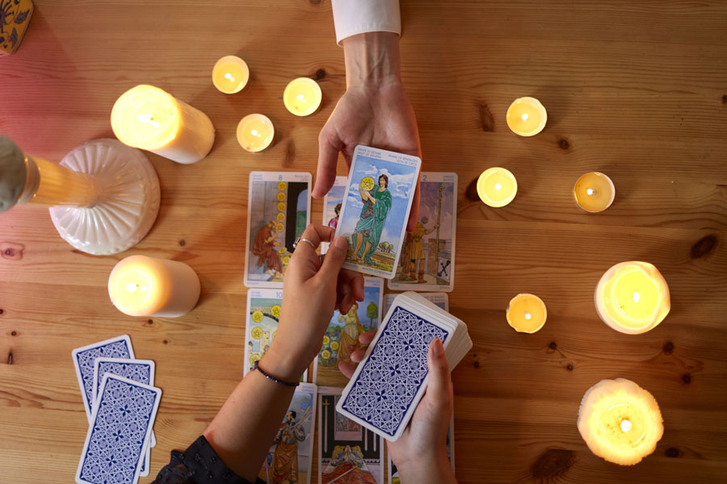
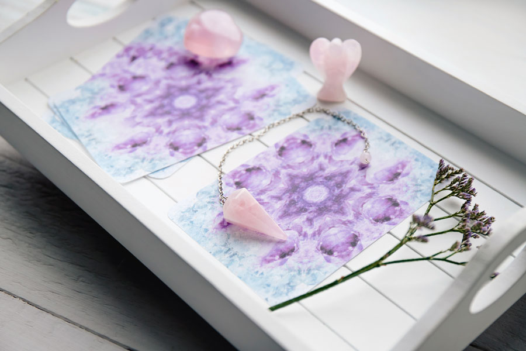
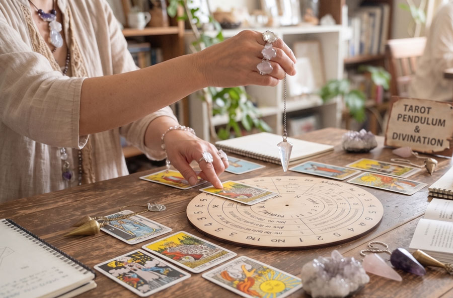
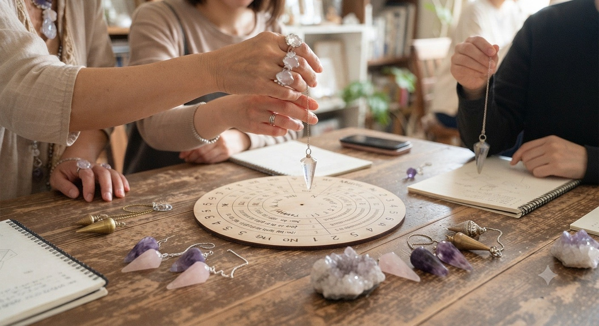

Worry
こんなお悩みありませんか心がモヤモヤしていませんか？
- 人間関係に疲れてしまった
- 恋愛や相手の気持ちが気になる
- 子どもの気持ちが分からず悩んでいる
- 仕事がうまくいくか不安
- お空に旅立ったペットは、どんな気持ちでいるのか知りたい
- 守護存在からのメッセージを受け取りたい
心に寄り添う、
タロットからのメッセージ
「今の悩み、どうしたらいい？」
そんな時は一人で抱え込まず、
ご相談ください。
あなたにぴったりのメッセージを
お届けします。
※24時間受付中！
お友達追加後、メッセージをお送りください。
About
天の笑について頑張り疲れた心に、
そっと寄り添う優しい占い
埼玉県・東京都を中心に、対面・オンライン・イベントにて、タロット、オラクルカード、ペンデュラムを用いた鑑定を行っています。
人間関係、恋愛、仕事、子育て、心の不安など、誰にも話せず抱えているお悩みに寄り添いながら、カードやペンデュラムから受け取ったメッセージを分かりやすくお伝えします。
答えを押し付けるのではなく、お客様ご自身が本当の気持ちに気づき、自分らしく前へ進めるように。
安心して話せる、あたたかい居場所のような鑑定を大切にしています。
Service
鑑定メニュータロット・オラクルカード
鑑定
今抱えているお悩みや迷いに対して、カードから受け取ったメッセージをお伝えします。恋愛、人間関係、仕事、家族のことなど、心の中で整理できない想いを一緒に見つめていきます。
ペンデュラム鑑定
ペンデュラムを使い、今のあなたに必要な気づきやメッセージを受け取る鑑定です。迷っていることや確認したいことがある方にもおすすめです。
フル鑑定・3ヶ月伴走鑑定
一度占って終わりではなく、その後の変化や不安にも寄り添えるよう、アフターセッションをご用意しています。状況を確認しながら、心の整理や前向きな一歩をサポートします。
ペンデュラムレッスン
「ペンデュラムに興味はあるけれど始め方が分からない」「買ってみたけれど使い方が分からない」そんな方に向けて、ご自身でペンデュラムを使えるようになるレッスンを行っています。
BREEZEマーケット・
イベント出展
心と体の癒しをテーマにしたイベントや、占いイベントへの出展も行っています。今後はお茶会など、気軽に楽しめる企画も予定しています。
Feature
天の笑の特徴心に寄り添う
あたたかい鑑定
お悩みを否定せず、まずは安心して話していただける空気づくりを大切にしています。心が疲れているとき、不安でいっぱいのときも、ありのままの気持ちを受け止めながら鑑定いたします。
守護存在からの
メッセージをお届け
カードやペンデュラムを通して、今のあなたに必要な気づきやメッセージをお伝えします。心の奥にある本当の想いに気づき、自分らしく進むきっかけとなるようサポートします。

対面・オンライン
イベントに対応
埼玉県・東京都を中心とした対面鑑定のほか、オンライン鑑定にも対応しています。遠方の方や外出が難しい方も、ご自宅から安心してご相談いただけます。

鑑定後も続く
アフターフォロー
フル鑑定や3ヶ月伴走鑑定では、鑑定後の変化や確認したいことに寄り添うアフターセッションをご用意しています。一人で抱え込まず、必要なタイミングで相談できる安心感を大切にしています。
Price
料金のご案内ご相談ください。
対面鑑定をご希望の方は、
お申し出ください。

ライト鑑定
初めての方におすすめの、気軽に受けられる鑑定です。
タロットを使って、今の状況やお悩みについて短時間でメッセージをお伝えします。
時間 10分
料金 1,000円
使用 タロットのみ
延長 1回10分まで 500円
鑑定例
今の状況の意味、今日〜今週の流れ、相手の気持ち、仕事の流れなど
ハーフ鑑定
タロットとペンデュラムを使い、迷いや選択肢について丁寧に見ていく鑑定です。
ライト鑑定よりも少し深く相談したい方におすすめです。
時間 30分
料金 5,000円
使用 タロット＋ペンデュラム
延長 なし
鑑定例
迷いの正体、見落としている視点、選択肢A・Bの方向性、行動タイミングの確認など
フル鑑定
じっくり相談したい方におすすめの鑑定です。
タロットとペンデュラムを使い、今のお悩みやこれからの流れを丁寧に読み解きます。
時間 60分
料金 10,000円
使用 タロット＋ペンデュラム
延長 10分ごとに500円、最大1時間まで
特典
1週間後のフォロー・ペンデュラム鑑定付きLINE・Zoomなどで、決断後の流れ確認や軌道修正が必要かどうかをチェックします。
3ヶ月継続鑑定
3ヶ月間、月1回の鑑定で継続的にサポートするメニューです。
定期的に状況を確認しながら、今の選択が合っているか、小さなズレがないかを一緒に見ていきます。
期間 3ヶ月
料金 28,000円
内容 月1回60分 × 3回
使用 タロット＋ペンデュラム
特典
月1回ペンデュラムミニ確認付きLINE・Zoomなどで、今の選択がOKか、小さなズレの修正確認などを行います。

ペンデュラム講座
ペンデュラムに興味がある方や、購入したけれど使い方が分からない方に向けた講座です。
基本的な使い方から、自分で確認するためのポイントまで丁寧にお伝えします。
時間 90分
料金 8,000円
内容 使い方・確認方法・実践練習など
心に寄り添う、
タロットからのメッセージ
「今の悩み、どうしたらいい？」
そんな時は一人で抱え込まず、
ご相談ください。
あなたにぴったりのメッセージを
お届けします。
※24時間受付中！
お友達追加後、メッセージをお送りください。